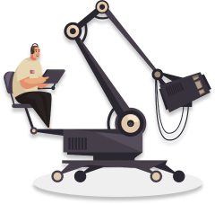

Порой фильмы устроены сложнее четырёхтомных романов. Но читать книги
учат со школы, а смотреть кино — нет. При этом без подготовки бывает
трудно получить от просмотра удовольствие.
На курсе из 8 занятий научимся быть осознанными зрителями.
Познакомимся с этапами кинопроизводства и узнаем, как смотреть кино
глазами сценариста, режиссёра и монтажёра. Разберёмся в особенностях
жанров и рассмотрим важнейшие картины, от «Гражданина Кейна» до
«Матрицы».
О курсе



-
8 занятий
Для погружения в кинематограф - 2 часа
Длительность каждого занятия - 3 недели
Длительность курса